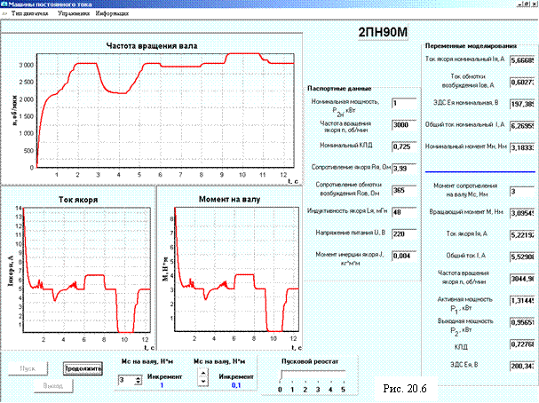

3. КРАТКОЕ ОПИСАНИЕ МОДЕЛИ МПТ
При программировании модели ДПТ параллельного возбуждения использовались каталожные параметры и следующие расчетные формулы:
момент холостого хода М0 = (3…8%)Мн; индуктивность якоря не учитывалась; сопротивление пускового реостата Rn = (Un - RяIяп) / Iяп, где Iяп = (1,7... 2,5)Iян; Iян = Iн - Iвн; Iвн = Un / Rов; электромагнитный момент двигателя Мэм = СМ I яФв = М0 + М; установившаяся частота вращения якоря ny = U / (CeФв) - (M + M0) · (Rя + Rn) / (CECMФ2в) = n0 - Δn; текущая частота n, вычислялась (посредством численного метода Эйлера) из уравнения динамики ДПТ:
M - Mc = Jdω / dt; n = 9,57ω;
М - вращающий момент двигателя; Mc - момент сопротивления на валу двигателя, принятый независимым от угловой скорости ω и от времени t; J – суммарный момент инерции в кг·м2 , пересчитанный к валу двигателя.
В соответствии с вариантом задания тип ДПТ параллельного возбуждения выбирается из приведенного в программе списка. Предусмотрен также ввод вручную параметров проектируемого двигателя. На рис. 20.6 представлены общий вид интерфейса, каталожные параметры и динамические характеристики выбранного из списка двигателей параллельного возбуждения типа 2ПН90М. Пуск двигателя был выполнен при моменте сопротивления на валу Mc = 3 Нм и введенном пусковом реостате Rn (пусковой ток Iп = 2,5Iян, ток возбуждения Iв = Iвн= const ).
После вывода пускового реостата частота вращения якоря увеличилась до 3000 об/мин. Затем пусковой реостат был полностью введен в цепь якоря и медленно выведен. Далее, момент сопротивления Mc был увеличен до 4 Н·м, уменьшен сначала до 3 Н·м, а затем до нуля и, наконец, увеличен до 3 Н·м.
Анализ графиков частоты вращения n, вращающего момента М и тока якоря Iя от времени, а также текущих параметров двигателя показывает, что расчетная модель адекватно отображает как статические, так и динамические электромагнитные процессы в двигателе.
